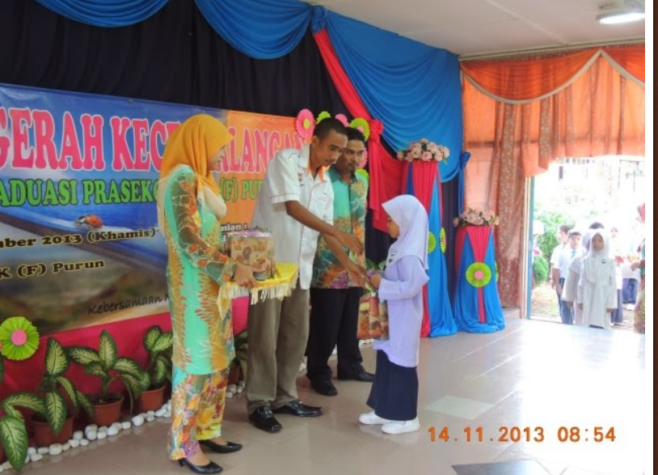
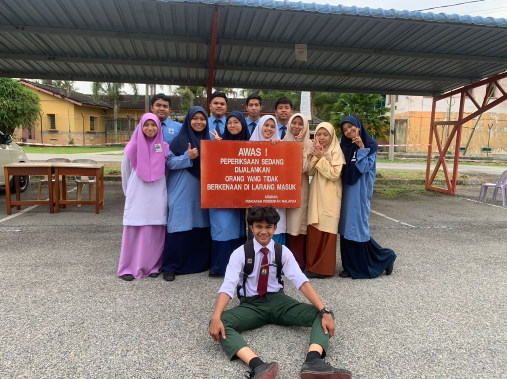

Education!
In this page I will show you where I get my education. There is two places that I didn't mention here because the lack of picture that I can share with you. Both of the places is Tadika Kemas Felda Purun and Pra Damai, SK Felda Purun where I get my first education.
SK Felda Purun!

This is where I get my education starting from primary 1 until primary 6. Eventhough I didn't finish my primary school study here, I still manage to create a lot of great memories and until now I still keep in contact with some of my friends.
SK Padang Tengku!
This is where I finished my primary schools studies. On April 20, 2017 I moved here and create a lot of new friends. I managed to complete my UPSR here with a good result which is 4A 2B. I also keep in contact with most of my friends there.
SMK Padang Tengku!

In this school I manage to complete my studies with flying colours. During my studies here I get to learn about a lot of things not even academically but also about life. Even though there is some bad memories that happened to me I still cherish memories that I managed to get during those times.